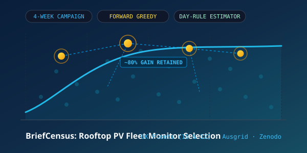

M.Sc. Computer Science · NUIST, Nanjing
El Houcine Oussi
Graduate researcher in solar power forecasting with a background in software engineering. My work evaluates when machine learning forecasts outperform established reference methods, and when that improvement delivers operational and economic value. Previously, I developed mobile applications and .NET backend systems.

- 5
- forecasting studies in progress
- 144
- solar farms in the 6-hour study (50 AU, 94 UK)
- 29
- public GitHub repositories
- 5
- languages spoken
About
From shipping software to measuring forecasts
I'm an M.Sc. student in Computer Science at Nanjing University of Information Science and Technology (NUIST), working with Prof. Ling Tan. Before that I earned a State Engineering Degree in Information Systems Engineering from SUPMTI in Oujda, Morocco.
Which learned solar forecasts actually beat strong reference forecasts, at which lead times, and when does the extra accuracy change a decision or save money?
I came to research from software engineering (C#/.NET, Java, Flutter, Django), and I run experiments the way I'd ship code: evaluation protocols registered before results, byte-identical reruns, checksum manifests, and pytest suites. I'm writing papers on solar forecasting and home-battery scheduling.
- Working on
- A 0.5–6 h forecast for solar farms from satellite images and weather forecasts
- Looking for
- Software engineering, machine learning, and applied research roles
- Languages
- Arabic and Tamazight (native), English, French, Mandarin Chinese (HSK 3)
- Based in
- Nanjing, China and Oujda, Morocco. Open to relocating.
- Archive
- Zenodo research archive
Research · 2026
Solar forecasting papers in preparation
Three studies are being written up as papers. The table below lists all five.
-
Paper in preparation
Reference specification, model updating and calibration population in hourly photovoltaic power forecasting
How much do LightGBM, GRU and small Transformer models really gain over a reference forecast at 2, 4, 6 and 12 hours ahead? The answer depends on which reference you pick, how often the model is retrained, and which data calibrates the prediction intervals. Tested at Alice Springs (DKASC), Hong Kong (HKUST) and Colorado (NREL PVDAQ 9068) under a pre-registered protocol.
-
Paper in preparation
Operational value of probabilistic solar forecasts in behind-the-meter battery scheduling
When does a probabilistic day-ahead solar forecast save money for a household with a battery? I simulated 91,290 scheduling scenarios over 40 real Ausgrid homes. Schedules that use the full forecast distribution lowered electricity costs in all 40 households.
-
Code and data on Zenodo
BriefCensus: a short metering campaign that chooses permanent monitors for rooftop photovoltaic fleet estimation and forecasting
Meter a rooftop fleet for a few weeks, then use a forward greedy search to pick the k systems worth monitoring permanently. A day-rule estimator with no fitted weights rebuilds the fleet's output from those monitors. Four weeks of metering kept 79.0–81.5% of the information gain from a full year on UK regional fleets, and 79.6% on a held-out Ausgrid fleet in Australia. Protocols are pre-registered and every run log has a SHA-256 checksum.
All active studies
| Study | Lead time | Data | Status |
|---|---|---|---|
| BriefCensus. Short metering campaign and greedy monitor selection | 4-week campaign | UK regional fleets (16 and 12) · Ausgrid hold-out | Released on Zenodo |
| Sky-image nowcasting. Does a ground sky camera add anything over PV history? | 5–30 min | Stanford SKIPP'D | Experiments complete |
| Solar farms up to 6 h ahead. Satellite images plus weather forecasts | 0.5–6 h | 50 Australian farms (AEMO) · 94 UK farms | Final held-out test |
| Reference choice and retraining. How both change measured skill | 2–12 h | DKASC Alice Springs · 31 HKUST rooftops · NREL | Writing the paper |
| From forecast quality to value. Probabilistic battery scheduling | Day-ahead | 91,290 scenarios · 40 Ausgrid households | Writing the paper |
Education
Degrees
-
CurrentNanjing, China
M.Sc. in Computer Science
Nanjing University of Information Science and Technology (NUIST)
Statistical and deep learning (Transformers, GRU), numerical weather prediction (ERA5 GRIB), satellite data (Himawari, Meteosat), and renewable energy forecasting.
- Research: probabilistic PV power forecasting, drift under retraining, choice of reference forecast.
- Methods: pre-registered protocols, paired bootstrap confidence intervals, Holm correction for multiple tests.
-
2021–2024Oujda, Morocco
State Engineering Degree in Information Systems (Diplôme d'Ingénieur)
SUPMTI, École Supérieure Privée de Gestion, Télécommunications et Informatique
Three-year engineering program in software engineering, distributed systems, databases, and enterprise integration.
- Distributed systems: fault tolerance, consensus protocols, microservices, Docker.
- Software architecture: Clean Architecture, Domain-Driven Design.
-
2019–2021Oujda, Morocco
Specialized Technician in Computer Development (TS)
ISTA Lazaret, Institut Spécialisé de Technologie Appliquée
Object-oriented programming in Java, C# .NET and C++; relational databases (SQL Server, MySQL); algorithms; UML and MERISE.
Experience
Work
-
2024–presentNanjing, China
Graduate researcher, solar forecasting
NUIST
I design and evaluate multi-horizon solar forecasting models. Two benchmark code archives are released on Zenodo.
- Reproducible pipelines in PyTorch, LightGBM, pvlib and NumPy.
- Satellite imagery (Himawari, Meteosat) and numerical weather prediction data (ERA5) as model inputs.
-
2024Berkane, Morocco
Backend and mobile engineering intern
Majal Berkane, smart city program
Built citizen-facing mobile apps for the municipality and connected them to its backend services.
- Flutter UI with Riverpod for MVVM state management.
- Integration with .NET Core REST APIs built on Clean Architecture.
-
2023Oujda, Morocco
Web engineering intern
Direction Provinciale de l'Équipement, du Transport, de la Logistique et de l'Eau
Built an internal Django portal that automated staff management, logistics and data routines (Pandas, NumPy). Deployed on Windows Server with IIS.
-
2022–presentSystemX
Lead developer
SystemX, my independent software label
Released the mobile game MystoGuess on Google Play and the real-time app Connect Check on Firebase.
Projects
Things I've built
-

Research code · Oct 2026
PV Forecast Benchmark
Evaluation code and data pipeline for hourly PV power forecasts with LightGBM, GRU and Transformers.
- Pre-registered protocol on NREL PVDAQ 9068
- Sites in Alice Springs, Hong Kong and Colorado
- Byte-identical reruns checked with SHA-256 manifests
-

Research code · Nov 2026
BriefCensus
Picks which rooftop PV systems to monitor permanently after a short metering campaign.
- Forward greedy selection on UK and Australian fleets
- Four weeks of data keep about 80% of a full year's information gain
- Pre-registered protocols, checksummed run logs
-

Live app · Firebase
Connect Check
A real-time two-player game: players join a room, answer the same questions, and see how their answers match.
- Rooms kept in sync with Firebase Realtime Database
- Riverpod MVVM, multiple languages
- Offline cache in SQLite
-

Mobile game · Google Play
MystoGuess
A guessing game with category and emoji challenges, a solo mode, and turn-based multiplayer.
- Published under SystemX
- Sub-second lookups from SQLite and JSON dictionaries
- Clean Architecture, domain separate from UI
-

IoT platform · .NET Core
EcoBeach
Monitors beaches with sensors: cleanliness indicators, telemetry, and water readings.
- REST API in C# and .NET Core
- Time-series and relational data models
- Flutter app for the operators on site
-

Compiler · C#
Expression Compiler
Compiles and evaluates math expressions: tokenizer, recursive-descent parser, and AST interpreter.
- Lexer turns text into tokens
- Parser handles precedence and associativity
- Post-order evaluation of the syntax tree
-

REST API · ASP.NET Core
Task With Auth .NET
Task management API with role-based authorization, JWT access tokens, and SQL Server migrations.
- Domain-Driven Design with separate layers
- Stateless JWT auth with refresh tokens
- Entity Framework Core on SQL Server
-

Hybrid app · Ionic
Map With Auth
Angular, Ionic and Capacitor app that shows the user's location and lets them save pins.
- Native GPS through Capacitor
- Saved places and routes per signed-in user
- Builds for Android and the web
Skills
Tools I use
- Forecasting and ML
- PyTorch, LightGBM, scikit-learn, pvlib, pandas, NumPy, Jupyter, ERA5 NWP, satellite imagery
- Mobile
- Flutter, Dart, Riverpod (MVVM), Android with Java, SQLite, Ionic and Capacitor, Play Store releases
- Backend
- ASP.NET Core, C#, Django, Spring Boot, Firebase (Auth, Firestore), REST APIs, Clean Architecture
- Systems and DevOps
- Docker, Docker Compose, Git, GitHub Actions, Azure DevOps, Linux and Bash, CI/CD
- Databases
- SQL Server, PostgreSQL, MySQL, SQLite, MongoDB, Cloud Firestore, Entity Framework Core
- Languages
- Arabic (native), Tamazight (native), English (fluent), French (good), Mandarin Chinese (HSK 3)
Contact
Get in touch
I'm looking for software engineering, machine learning, and applied research roles, and I'm happy to talk about research collaborations. I can relocate.
- oussi108@gmail.com
- Phone
- +212 642 587 839 (also WhatsApp)
- el-houcine-oussi
- GitHub
- Oussi108